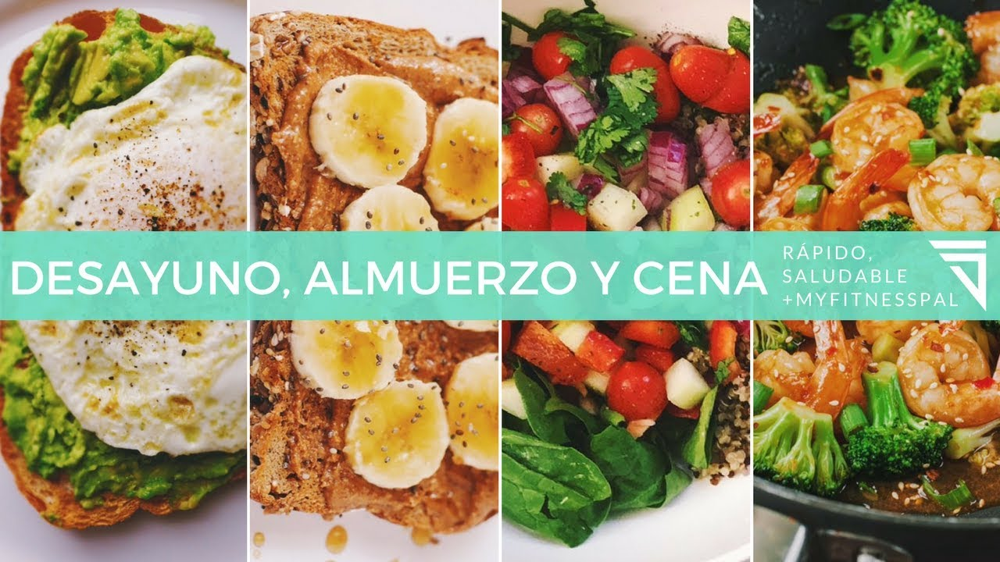

Utiliza nuestro recetario diario para que no te la compliques
DESAYUNO: PAN FRANCES
Mezclar la leche, la canela, el huevo y endulzamos al gusto
remojamos nuestro pan en la mezcla y en un comal a fuego bajo
los cocinamos. Servimos con nuestros toppings favoritos.
COMIDA: ENFRIJOLADAS
En una cacerola ponemos manteca o aceite con el chile puya, ya que
el chile se dore agregamos los frijoles, apagamos hasta hervir.Para
las enfrijoladas, doramos ligeramente las tortillas y las sumergemos
en los frijoles y enrollamos.Servir y rellenar con lo que prefieras.
CENA: TORTILLA DE HUEVO
batimos los huevos, salpiméntalo, y cocínalo en una sartén
con mantequilla, de forma que te quede una tortilla francesa.
Agregale jamón y queso, ya que el queso este fundido
retiramos y servimos
Has llegado al final de este segmento. Esperamos que te haya sido de buena ayuda este recetario.
Nuestro recetario diario se actualiza cada dia desde las 7:00 A.M hora México